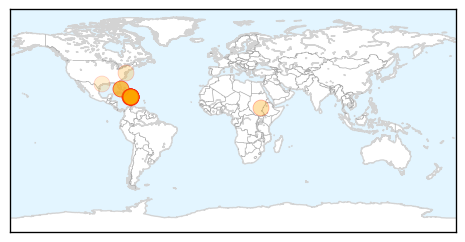

30 Day Trends
Web: 1 alerts, 0 warnings
Twitter: 0 alerts, 0 warnings
Top Articles:
- 0.998
- Total of 80 people have died of cholera in South Sudan – MSF
- 0.995
- Ban Ki-moon: UN to help Haiti fight cholera epidemic
- 0.993
- UN Chief Makes 'Pilgrimage' to Haiti to Address Cholera Crisis
- 0.992
- U.N. chief makes 'pilgrimage' to Haiti to address cholera crisis
- 0.992
- UN chief Ban Ki-moon makes 'pilgrimage' to Haiti to address cholera crisis
- 0.992
- Ghana, Business Advice, Jobs, News, Business Directory, Real Estate, Finance, Forms, Auto
- 0.991
- U.N. chief makes 'pilgrimage' to Haiti to address cholera crisis
- 0.986
- Ban Ki Moon displays strong UN commitment to eradicate cholera in Haiti
- 0.981
- Ban Ki Moon visits Haiti - americas - world
- 0.980
- UN chief in Haiti launches sanitation program
- 0.979
- UN leader focuses on cholera in Haiti - World News
- 0.978
- UN leader vows to help Haiti fight cholera epidemic
- 0.972
- UN leader vows to help Haiti fight cholera epidemic
- 0.971
- In Haiti, Ban calls for greater efforts to improve water and sanitation, end cholera epidemic
- 0.968
- UN chief in Haiti launches sanitation program
- 0.967
- UN Chief Launches Sanitation Program in Haiti
- 0.967
- UN leader visits cholera struck Haiti
- 0.965
- UN Chief Pledges To Help Haitians End Cholera Scourge
- 0.957
- U.N. Leader Vows to Help Haiti Fight Cholera Epidemic — Naharnet
- 0.955
- UN chief makes ‘pilgrimage’ to Haiti to address cholera crisis
- 0.948
- UN leader vows to help Haiti fight cholera epidemic
- 0.905
- Politic : Towards water and sanitation services for over 3 million Haitians
- 0.845
- UN chief in Haiti launches sanitation program
- 0.706
- Dangerous bacteria infects several in Talbot
- 0.547
- Border Crisis Leads Conservatives to Claim Child Migrants Are Diseased
Top Tweets:
-
No tweets found for Jul 15, 2014
Web/News Articles

Tweets

Article Locations
Article Confidences